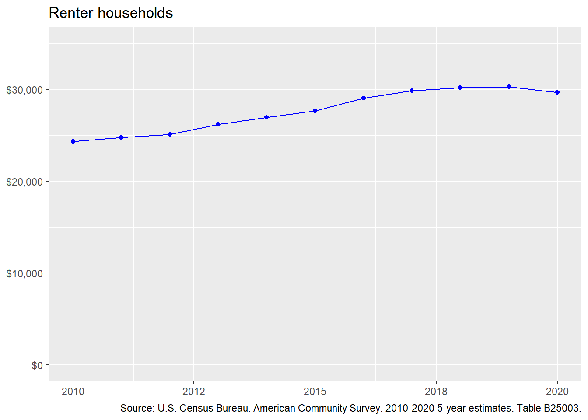
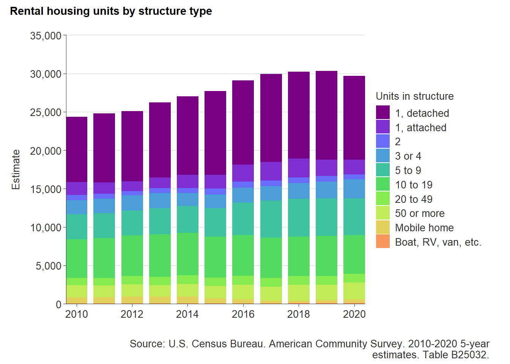
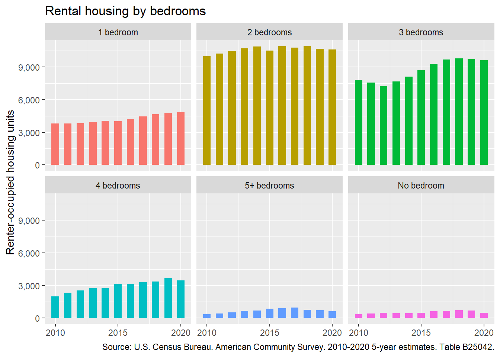
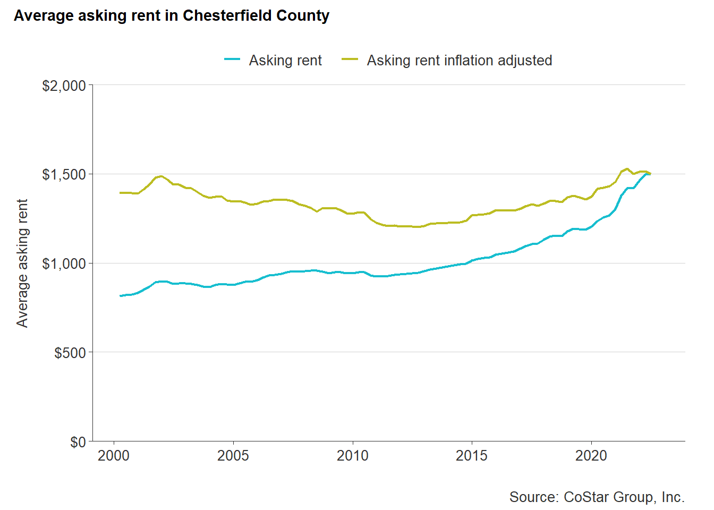

12 Rental market summary
This section summarizes the existing stock of rental units within the county and provides an analysis of recent price and production trends in the rental market.
12.1 Rental housing stock
A growing population, housing affordability challenges, and changing housing preferences have all contributed to the expansion of rental housing throughout Chesterfield County. This strong demand for rental housing on a spectrum—from high-end apartments for working professionals to single room occupancy units.
12.1.1 Total renters
Over the past decade, the number of renter households in the county has steadily increased. From 2010 to 2019, the number of renters in the county grew from 24,312 to 30,273—a 24 percent increase.
From 2019 to 2020, there was a two percent decline in the renting population. But this decrease of 633 renters may be attributed to the collection challenges of the 2020 Census count and historical undercounting of renters. As rising interest rates and home sales prices persist, the number of renters in the county can be expected to rise as well—further contributing to the need for a diverse mix of rental housing opportunities.

12.1.2 Rental housing type
The rise in renters in Chesterfield County has not led to a commensurate rise in diverse housing options for renters. Over a third (37 percent) of rental housing in the county is made up of single-family detached homes—an estimated 10,984 units. Another third of rental housing is multifamily housing located in buildings with 5 to 19 units. These are typically low-rise and garden style apartments. The remaining third is a mix of smaller multifamily like duplexes, townhomes, and manufactured homes.
The distribution of rental housing type has largely remained the same since 2010. The major increases in rental housing have been among single-family detached home rentals (2,502 added since 2010) and multifamily buildings containing 5 to 9 units (1,545 added). Although single-family rentals provide growing families with much needed space, multifamily development can more effectively address rapidly growing demand at scale.

12.1.3 Number of bedrooms
Most rental housing in the county are two-bedroom and three-bedroom homes. This accounts for nearly half of all rental housing in the county (68 percent).
The number of four-bedroom rental homes has been on a steady increase since 2010—from 1,995 to 3,453 in 2020, a 73 percent increase. Although the increasing number of families in search of larger homes has led to a corresponding demand in larger rental homes, the impact can be felt among single adults, especially low-income adults, needing affordable rental opportunities.

12.1.4 Rental housing age
The majority of existing rental housing in the county was built between 1960 and 1999. This represents a significant portion of rental housing that is at least 20 years of age. Aging rental homes often mean increasing maintenance costs or the need for significant renovations that get passed down to tenants.
12.2 Special types of rental housing
Two significant components of Chesterfield County’s rental housing supply, single-family rentals and manufactured home communities, deserve special attention. This section explores available data and trends for these unique types of housing.
12.2.1 Single-family rentals
Single-family home rentals (SFRs) are a growing trend in the rental market as a result of lifestyle changes and affordability challenges. The COVID-19 pandemic has also had a dramatic impact on the demand for SFRs, as many individuals and families looked to avoid higher density apartments and have the space to work and learn remotely.1
SFR in the county have been on the rise—over 28 percent growth in the past decade, according to ACS estimates. This is the most substantial increase among all rental housing types.
To obtain a better understanding of the scale and distribution of SFR across the county, parcel records can be used to cross-reference the property’s address with the owner’s address. Generally, these addresses will match for all owner-occupied homes. Those that do not match are most likely not occupied by the owner, which usually implies the house is being leased to other occupants.
Based on an analysis of these address in the latest parcel records from the county, there are an estimated 13,205 single-family home rentals in the county. These comprise nearly 12 percent of all single-family homes.
| Ownership | Number | Percent |
|---|---|---|
| Owner-occupied SFH | 98,364 | 88.2% |
| Renter-occupied SFH | 13,205 | 11.8% |
The map below shows the spatial distribution of SFRs across the county. They are found in nearly every community, but are most prevalent in Ettrick neighborhoods surrounding Petersburg and Colonial Heights, between Route 288 and Chippenham Parkway, the Route 1 corridor, and the Hull Street corridor.
Reading layer `ch_sfr' from data source
`C:\Users\Jonathan\Documents\repos\chesterfield-market-analysis\data\shp\ch_sfr.shp'
using driver `ESRI Shapefile'
Simple feature collection with 13205 features and 15 fields
Geometry type: POINT
Dimension: XY
Bounding box: xmin: -77.87475 ymin: 37.22381 xmax: -77.27231 ymax: 37.55833
Geodetic CRS: WGS 84When aggregated to the county’s five magisterial districts, single-family rentals are most common in the Bermuda and Dale districts. SFRs comprise more than 13 percent of the total single-family stock in these districts, but this is still not significantly above the county average. The Midlothian district has the lowest share of SFRs at 9 percent.
The majority of SFR owners (61 percent) also live in the county, while 29 percent live somewhere else in Virginia. The remaining 10 percent of single-family rental owners live outside of the state.
12.2.2 Manufactured homes
While single-family homes saw a major increase in rentals, manufactured homes experienced a significant decrease. From 791 in 2010 to 527 in 2020, the reported number of manufactured homes in the county has been cut down by a third.
This estimate from the U.S. Census Bureau’s American Community Survey severely undercounts manufactured homes located in manufactured home communities (MHCs). Manufactured home communities are a valuable source of affordable housing across Virginia. Chesterfield County is home to a significant amount of MHCs—about 1,500 in total.
Additional details and maps of the county’s manufactured home communities can be found in Chapter 3.
However, a significant issue faces manufactured home community residents. MHCs often give residents two options, 1) a resident may rent both their home and the lot on which that home is placed, or 2) a resident may own their home and rent the lot on which that home is placed.
In both cases, a resident is renting, but residents in the second case are in an especially precarious situation should a MHC owner choose to sell or redevelop their property. MHCs are increasingly at-risk of redevelopment.
In 2021, Suburban Village, a MHC along the Midlothian Turnpike, was purchased by a Maryland-based investment firm for $23 million. As the county’s third largest MHC with nearly 220 households, residents and advocates fear for substantial lot rent increases or displacement.
In contrast to growing investment firm interest in MHCs, local affordable housing nonprofit, project:HOMES, purchased Bermuda Estates, a 52 unit MHC in 2021. Since the purchase, project:HOMES has made significant improvements to community infrastructure and has been working to replace distressed homes with new high-quality and energy efficient manufactured homes (with support from Virginia Tech’s Virginia Center for Housing Research and Virginia Housing). project:HOMES’s ultimate goal is to empower residents to take ownership of the community.
12.3 Rental housing costs
The following data are from CoStar’s multifamily database, which includes 118 existing rental properties in the county. Nine manufactured home communities are not found in this database; therefore, accurate and recent rent amounts for those properties are not available. Similarly, the single-family rental market is not tracked by CoStar, so these data do not include standalone homes for rent.
12.3.1 Average asking rent
From the early 2000s, rental housing costs had generally been declining in the county. But changing trends in affordability and lifestyle have led to an increasing demand for rentals that has led to a complementary increase in rental housing costs. Since 2012, the average asking rent in the county has been on a steady increase. In Q2 2021, average asking rent in the county reached a two decade high of $1,515, when adjusting for inflation.
Average market asking rent per unit is expected to climb in the county—signalling an increasing demand, as well as the construction of higher end rental apartments.

12.3.2 Rent by bedrooms
The number of bedrooms often impacts rental housing costs—more bedrooms generally equals higher rent. As of 2022 Q3, there is an approximate difference of $420 between the average rent for a 1 bedroom ($1,336) versus a three bedroom apartment ($1,756). Average rent for a 2 bedroom apartment was right in the middle at $1,499.
12.4 Rental housing construction
Like most of the country, the Great Recession negatively impacted home building in the county. That impact was most felt among single-family home construction, however. Pre-recession, the number of single-family residential construction permits averaged 2,050 per year in Chesterfield County. This pace would not be seen again until 2020.
12.4.1 Multifamily building permits
Multifamily (five or more units) home starts were not as impacted by the recession. Multifamily building permits saw a substantial increase in 2019 when it reached a two decade high of 1,466.
Duplexes and smaller multifamily homes like tri-plexes and quads have not seen substantial construction in the county. These types of properties often make up what is called “Missing Middle” housing, a term used to describe smaller multifamily and clustered single-family housing that often offers affordability by design (i.e., smaller homes typically mean lower price).
12.4.2 Proposed and in-progress developments
There are currently 19 proposed or under construction multifamily developments in the county—an estimated total of 5,039 rental homes2. Six of these properties are expected to be completed in 2022, while the remaining homes will be completed over the next two years.